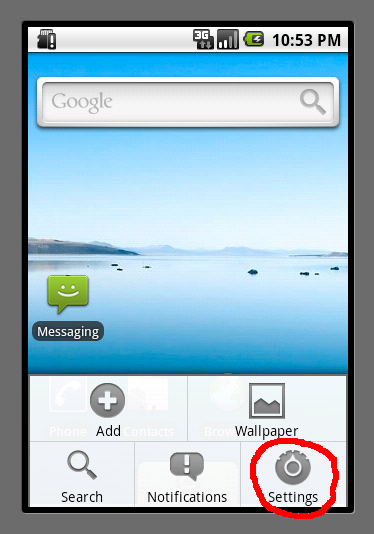
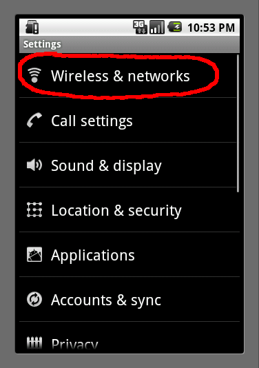
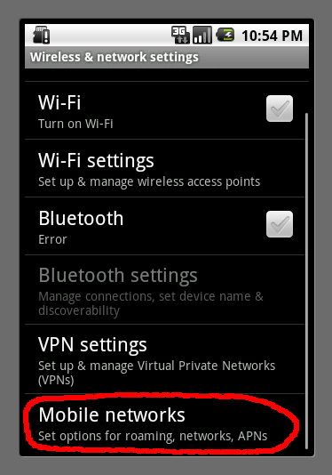
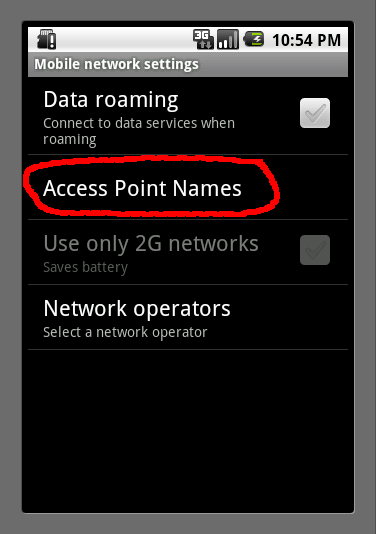
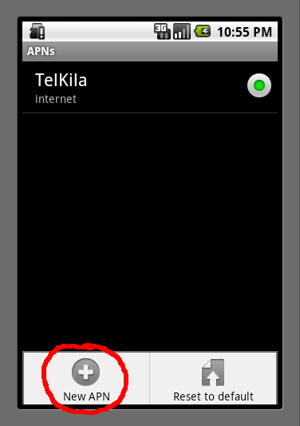
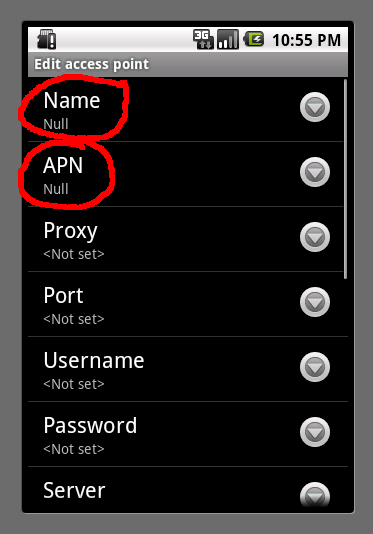
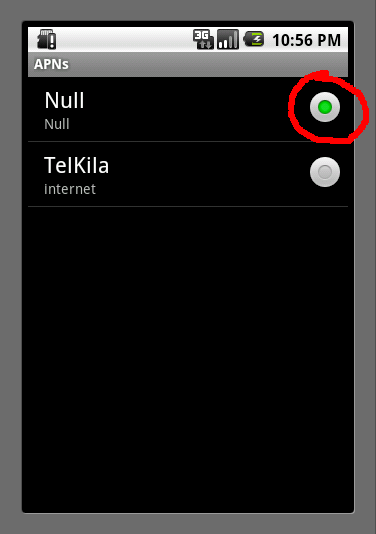

When a Nexus One is powered up for the first time it will immediately try to connect to google and wherever else as part of its setup. If you don't have a data plan that could cost you money. My AT&T plan will charge me a $2 minumum and I could quickly exceed that and get into more charges. To avoid that first you need to power up the device with no SIM card installed. If the SIM card is in it and the access point settings are correct you may incur charges.
Boot the phone and go through the first time setup. You can connect to wi-fi if its available.
|  | Hit the menu button and press settings |
|  | Press Wireless and networks |
|  | Press Mobile networks |
|  | Press Access Point Names |
|  | Press the menu button and then choose New APN |
|  | You must enter something for the Name and the APN field at a minumum. I put in Null, but anything works, or doesn't work, since the point is to have it not work. |
|  |
Press the back button to save your new APN and then set this to be the active APN indicated by the green indicator. |
You may now shutdown the phone, put in your SIM card and boot back up without a data connection happening. The phone will try to connect over the "Null" APN and fail to connect. Wi-fi will work fine and you can still browse the web, use email, google maps, etc.
Now donate $30/month to a charity or your retirement account.